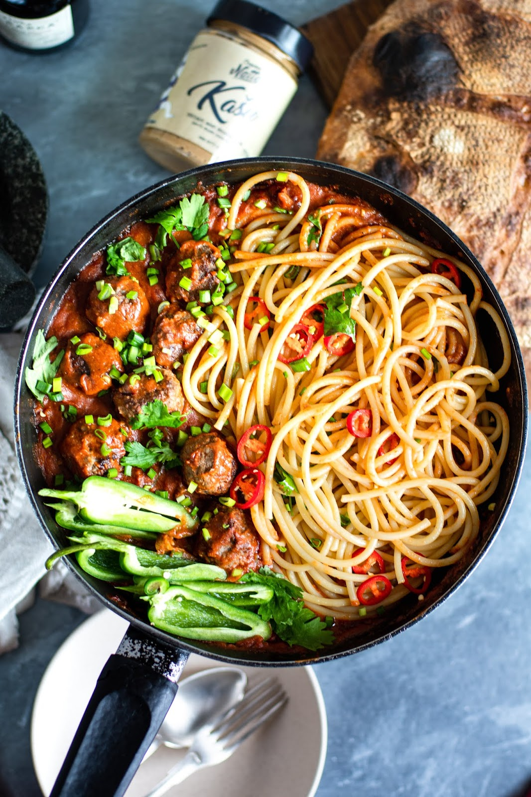

Pasta vürtsika indiapähklivõikastmega
Ülilihtne pastakastme retsept.
Kastme teeb eriliseks see, et sinna on lisatud indiapähklivõiet, mis muudab seda retsepti veidike eksootilisemaks.
Lisaks on see kaste parajalt vürtsikas, mis sobib veiselihast lihapallide ja spagettidega imehästi kokku.
Selle kastme tegemine võtab kokku umbes 15-20 minutit!

Pasta kaste: |
- Oliiviõliu
- 1 punane sibul
- 1 spl Natty indiapähklivõiet Kašu
Hobbies:
- gym
- relaxing
- movies
Japheth Juur
Awesome web developer
nice
Japheth Juur.8#169 2020